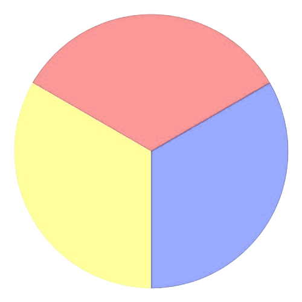

Get to know that by reading the below article.
(Be aware that most of the data is made up)
Here's what a color may look like:
What's that color:
Brown.
And this is how many people answered that correctly:
| Name | Cool | Wavelength | |
|---|---|---|---|
| Has been | Still is | ||
| Blue | Y | N | 432 |
| Red | N | N | 332 |
Here's what a color map may look like:
